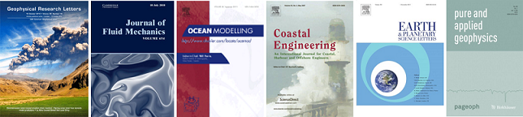

|  |
Please refer to Google Scholar for an overview of my publications.
A Study on Key Determinants in Enhancing Storm Surges along the Coast: Interplay between Tropical Cyclone Motion and Coastal Geometry
Xiaojuan Qian✝, Sooncheol Hwang✝, Sangyoung Son
Journal of Geophyscial Research - Oceans, 129 (2), Feb. 2024
BibTeX
URL
@Article{jgr2024,
author = {Xiaojuan Qian, Sooncheol Hwang, Sangyoung Son},
journal = {A Study on Key Determinants in Enhancing Storm Surges along the Coast: Interplay between Tropical Cyclone Motion and Coastal Geometry},
title = {Journal of Geophyscial Research - Oceans},
year = {2024},
volume = {129(2)},
pages = {1-20},
doi = {doi.org/10.1029/2023JC020400},
url = {https://agupubs.onlinelibrary.wiley.com/doi/full/10.1029/2023JC020400},
}
An efficient HLL-based scheme for capturing contact-discontinuity in scalar transport by shallow water flow
Sooncheol Hwang✝, Sangyoung Son
Communications in Nonlinear Science and Numerical Simulation, 127, 107531, Dec. 2023
BibTeX
URL
@Article{cnsns2023,
author = {Sooncheol Hwang, Sangyoung Son},
journal = {An efficient HLL-based scheme for capturing contact-discontinuity in scalar transport by shallow water flow},
title = {Communications in Nonlinear Science and Numerical Simulation},
year = {2023},
volume = {127},
pages = {},
doi = {doi.org/10.1016/j.cnsns.2023.107531},
url = {https://www.sciencedirect.com/science/article/pii/S1007570423004525},
}
Statistical Analysis of the Tsunamis from Multiple Faults' Sequential Failure with Different Time-Intervals and Geographical Layouts
Sangyoung Son, Taehwa Jung
Ocean Engineering, 250, 110720, Apr. 2022
BibTeX
URL
@Article{oe2022,
author = {Sangyoung Son, Taehwa Jung},
journal = {Statistical Analysis of the Tsunamis from Multiple Faults' Sequential Failure with Different Time-Intervals and Geographical Layouts},
title = {Ocean Engineering},
year = {2022},
volume = {250},
pages = {110720},
doi = {doi.org/10.1016/j.oceaneng.2022.110720},
url = {https://www.sciencedirect.com/science/article/pii/S0029801822001718},
}
Near Real-time Predictions of Tropical Cyclone Trajectory and Intensity in the Northwestern Pacific Ocean using Echo State Network
Yongsu Na✝, Byoungjoon Na✝, Sangyoung Son
Climate Dynamics, 58, 6511-667, Feb. 2022
BibTeX
URL
@Article{cldy2022,
author = {Yongsu Na, Byoungjoon Na, Sangyoung Son},
journal = {Near Real-time Predictions of Tropical Cyclone Trajectory and Intensity in the Northwestern Pacific Ocean using Echo State Network},
title = {Climate Dynamics},
year = {2022},
volume = {58},
pages = {651-667},
doi = {10.1007/s00382-021-05927-1},
url = {https://link.springer.com/article/10.1007/s00382-021-05927-1},
}
Probabilistic Assessment of Delayed Multi-Fault Rupture Effect on Maximum Tsunami Runup along the East Coast of Korea
Inchan Yeo, Tae-Hwa Jung, Sangyoung Son, Hyun-Doug Yoon
KSCE Journal of Civil Engineering, 26(1), 1-12, Jan. 2022
BibTeX
URL
@Article{ksce2022,
author = {Inchan Yeo, Tae-Hwa Jung, Sangyoung Son, Hyun-Doug Yoon},
journal = {Probabilistic Assessment of Delayed Multi-Fault Rupture Effect on Maximum Tsunami Runup along the East Coast of Korea},
title = {KSCE Journal of Civil Engineering},
year = {2021},
volume = {26(1)},
pages = {1-12},
doi = {10.1007/s12205-021-0272-x},
url = {https://link.springer.com/article/10.1007/s12205-021-0272-x},
}
Void fraction estimation using a simple combined wave gauge system under breaking waves
Byoungjoon Na✝, Sangyoung Son
Ocean Engineering, vol. 241, pp. 110059, Dec. 2021
BibTeX
URL
@Article{oe2021,
author = {Byoungjoon Na, Sangyoung Son},
journal = {Void fraction estimation using a simple combined wave gauge system under breaking waves},
title = {Ocean Engineering},
year = {2021},
volume = {241},
pages = {110059},
doi = {10.1016/j.oceaneng.2021.110059},
url = {https://www.sciencedirect.com/science/article/pii/S0029801821013883},
}
Adaptive Third Order Adams-Bashforth Time Integration for Extended Boussinesq Equations
Sasan Tavakkol, Sangyoung Son, Patrick Lynett
Computer Physics Communications, vol. 265, pp. 108006, Aug. 2021
BibTeX
URL
@Article{cpc2021,
author = {Sasan Tavakkol,Sangyoung Son, Patrick Lynett},
journal = {Adaptive Third Order Adams-Bashforth Time Integration for Extended Boussinesq Equations},
title = {Computer Physics Communications},
year = {2021},
volume = {265},
pages = {108006},
doi = {10.1016/j.cpc.2021.108006},
url = {https://www.sciencedirect.com/science/article/pii/S0010465521001181},
}
Prediction of Atmospheric Motion Vectors around Typhoons using Generative Adversarial Network
Byoungjoon Na✝, Sangyoung Son
Journal of Wind Engineering & Industrial Aerodynamics, vol. 214, pp. 104643, Jun. 2021
BibTeX
URL
@Article{jweia2021,
author = {Byoungjoon Na, Sangyoung Son},
title = {Prediction of Atmospheric Motion Vectors around Typhoons using Generative Adversarial Network},
journal = {Journal of Wind Engineering & Industrial Aerodynamics},
year = {2021},
volume = {214},
pages = {104643},
doi = {10.1016/j.jweia.2021.104643},
url = {https://www.sciencedirect.com/science/article/pii/S016761052100129X},
}
Modeling of Accidental Oil Spill at the Different Phases of LNG Terminal Construction
Byoungjoon Na✝ Sangyoung Son, Jae-Cheon Choi
Journal of Marine Science and Engineering, vol. 9(4), pp. 392, Apr. 2021
BibTeX
URL
@Article{jmse2021,
author = {Byoungjoon Na, Sangyoung Son, Jae-Cheon Choi},
title = {Modeling of Accidental Oil Spill at the Different Phases of LNG Terminal Construction},
journal = {Journal of Marine Science and Engineering},
year = {2021},
volume = {9(4)},
pages = {392},
doi = {10.3390/jmse9040392},
url = {https://www.mdpi.com/2077-1312/9/4/392},
}
An Analytical and Numerical Study of a Vertically Discretized Multi-paddle Wavemaker for Generating Free Surface and Internal Waves
Yeulwoo Kim, Sangyoung Son, Taehwa Jung, Timu Gallien
Coastal Engineering, vol. 165, pp. 103840, Apr. 2021
BibTeX
URL
@Article{ce2021,
author = {Yeulwoo Kim, Sangyoung Son, Taehwa Jung, Timu Gallien},
title = {An Analytical and Numerical Study of a Vertically Discretized Multi-paddle Wavemaker for Generating Free Surface and Internal Waves},
journal = {Coastal Engineering},
year = {2021},
volume = {165},
pages = {103840},
doi = {10.1016/j.coastaleng.2021.103840},
url = {https://www.sciencedirect.com/science/article/pii/S0378383921000016},
}
Active Tsunami Generation by Tectonic Seafloor Deformations of Arbitrary Geometry Considering Rupture Kinematics
Taehwa Jung, Sangyoung Son,
Wave Motion, vol. 100, pp. 102683, Jan. 2021
BibTeX
URL
@Article{wm2021,
author = {Taehwa Jung, Sangyoung Son},
title = {Active Tsunami Generation by Tectonic Seafloor Deformations of Arbitrary Geometry Considering Rupture Kinematics},
journal = {Wave Motion},
year = {2021},
volume = {100},
pages = {102683},
doi = {https://doi.org/10.1016/j.wavemoti.2020.102683},
url = {https://www.sciencedirect.com/science/article/pii/S0165212520303139},
}
Quantitative Assessment of Inundation Risks from Physical Contributors Associated with Future Storm Surges: A Case Study of Typhoon Maemi (2003)
Sooncheol Hwang✝, Sangyoung Son, Chilwoo Lee✝, Hyun-Doug Yoon,
Natural Hazards, vol. 104(2), pp. 1389-1411, Nov. 2020
BibTeX
URL
@Article{nhaz2020,
author = {Sooncheol Hwang, Sangyoung Son, Chilwoo Lee, Hyun-Doug Yoon},
title = {Quantitative Assessment of Inundation Risks from Physical Contributors Associated with Future Storm Surges: A Case Study of Typhoon Maemi (2003)},
journal = {Natural Hazards},
year = {2020},
volume = {104(2)},
pages = {1389-1411},
doi = {10.1007/s11069-020-04225-z},
url = {https://link.springer.com/article/10.1007/s11069-020-04225-z},
}
Assessment of Uncertainties in Projecting Future Changes to Extreme Storm Surge Height Depending on Future SST and Greenhouse Gas Concentration Scenarios
Jung-A Yang✝, Sooyoul Kim, Sangyoung Son, Nobuhito Mori, Hajime Mase,
Climatic Change, vol. 162, pp. 425-442, Sep. 2020
BibTeX
URL
@Article{clim2020,
author = {Jung-A Yang, Sooyoul Kim, Sangyoung Son, Nobuhito Mori, Hajime Mase},
title = {Assessment of Uncertainties in Projecting Future Changes to Extreme Storm Surge Height Depending of Future SST and Greenhouse Gas Concentration Scenarios},
journal = {Climatic Change},
year = {2020},
volume = {162},
pages = {424-442},
doi = {10.1007/s10584-020-02782-7},
url = {https://link.springer.com/article/10.1007/s10584-020-02782-7},
}
Field Survey and Numerical Modelling of the December 22, 2018 Anak Krakatau Tsunami
Jose Borrero, et al. (18 co-authors),
Pure and Applied Geophysics, vol. 177(9), pp. 2457-2475, Sep. 2020
BibTeX
URL
@Article{Page2020,
author = {Jose Borrero, 18 co-authors},
title = {Field Survey and Numerical Modelling of the December 22, 2018 Anak Krakatau Tsunami },
journal = {Pure and Applied Geophysics},
year = {2020},
volume = {177(9)},
pages = {2457-2475},
doi = {10.1007/s00024-020-02515-y},
url = {https://link.springer.com/article/10.1007/s00024-020-02515-y},
}
The Effect of Nozzle Geometry on the Turbulence Evolution in an Axisymmetric Jet Flow: a Focus on Fractals
Yongwon Seo, Haeng-Sik Ko, Sangyoung Son,
Physica A: Statistical Mechanics and its Applications, vol. 550, pp. 124145, Jul. 2020
BibTeX
URL
@Article{Physa2020,
author = {Yongwon Seo and Haeng-Sik Ko and Sangyoung Son},
title = {The Effect of Nozzle Geometry on the Turbulence Evolution in an Axisymmetric Jet Flow: a Focus on Fractals},
journal = {Physica A: Statistical Mechanics and its Applications},
year = {2020},
volume = {550},
pages = {124145},
doi = {10.1016/j.physa.2020.124145},
url = {https://www.sciencedirect.com/science/article/pii/S037843712030008X},
}
Modeling Scour and Deposition in Harbors due to Complex Tsunami-Induced Currents
Sangyoung Son, Patrick Lynett, Aykut Ayca
Earth Surface Processes and Landforms, vol. 45(4), pp. 978-998, Mar. 2020.
BibTeX
URL
@Article{ESPL2020,
author = {Sangyoung Son, Patrick Lynett, Aykut Ayca},
title = {Modeling Scour and Deposition in Harbors due to Complex Tsunami-Induced Currents},
journal = {Earth Surface Processes and Landforms},
year = {2020},
volume = {45(4)},
pages = {978-998},
doi = {10.1002/esp.4791},
url = {https://onlinelibrary.wiley.com/doi/10.1002/esp.4791},
}
Three-dimensional Hydrodynamics Associated with a Solitary Wave Traveling over an Alongshore-variable, Shallow Shelf
Patrick Lynett, David Swigler, Hoda El Safty, Luis Montoya, Adam Keen, Sangyoung Son, Pablo Higuera,
ASCE Journal of Waterway, Port, Coastal, and Ocean Engineering, vol. 145(6), pp.04019024, Nov. 2019.
BibTeX
URL
@Article{ASCEWW2019,
author = {Patrick Lynett, David Swigler, Hoda El Safty, Luis Montoya, Adam Keen, Sangyoung Son, Pablo Higuera},
title = {Three-dimensional Hydrodynamics Associated with a Solitary Wave Traveling over an Alongshore-variable, Shallow Shelf},
journal = {ASCE Journal of Waterway, Port, Coastal, and Ocean Engineering},
year = {2019},
volume = {145},
pages = {04019024},
doi = {10.1061/(ASCE)WW.1943-5460.0000525},
url = {https://ascelibrary.org/doi/full/10.1061/%28ASCE%29WW.1943-5460.0000525},
}
Comparative Study on the Numerical Simulation of Bathymetric Changes under Storm Condition
Minsang Cho, Hyun-Doug Yoon, Kideok Do, Sangyoung Son, In-Ho Kim,
Journal of Coastal Research, vol. 91(SI), pp. 106-110, Aug. 2019
BibTeX
URL
@Article{JCR2019,
author = {Minsang Cho, Hyun-Doug Yoon, Kideok Do, Sangyoung Son, In-Ho Kim},
title = {Comparative Study on the Numerical Simulation of Bathymetric Changes under Storm Condition},
journal = {Journal of Coastal Research},
year = {2019},
volume = {91(SI)},
pages = {106-110},
doi = {10.2112/SI91-022.1},
url = {https://www.jcronline.org/doi/abs/10.2112/SI91-022.1},
}
Role of Shelf Geometry and Wave Breaking in Single N-type Tsunami Runup under Geophysical-Scale
Dae-Hong Kim, Sangyoung Son
Ocean Modelling, vol. 138, pp. 13-22, Jun. 2019
BibTeX
URL
@Article{OM2019,
author = {Dae-Hong Kim, Sangyoung Son},
title = {Role of Shelf Geometry and Wave Breaking in Single N-type Tsunami Runup under Geophysical-Scale},
journal = {Ocean Modelling},
year = {2019},
volume = {138},
pages = {13-22},
doi = {10.1016/j.ocemod.2019.05.001},
url = {https://www.sciencedirect.com/science/article/pii/S1463500318303743},
}
Increasing Flood Risk due to River Runoff in the Estuarine Area during a Storm Landfall
Chilwoo Lee✝, Sooncheol Hwang✝, Kideok Do, Sangyoung Son,
Estuarine, Coastal and Shelf Science, vol. 221, pp. 104-118, May. 2019
BibTeX
URL
@Article{ECSS2019,
author = {Chilwoo Lee and Sooncheol Hwang and Kideok Do and Sangyoung Son},
title = {Increasing Flood Risk due to River Runoff in the Estuarine Area during a Storm Landfall},
journal = {Estuarine, Coastal and Shelf Science},
year = {2019},
volume = {221},
pages = {104-118},
doi = {10.1016/j.ecss.2019.03.021},
url = {https://www.sciencedirect.com/science/article/pii/S0272771418308618},
}
Lagrangian-like Volume Tracking Paradigm for Mass, Momentum, and Energy of Nearshore Tsunamis and Damping Mechanism
Dae-Hong Kim and Sangyoung Son,
Scientific Reports, vol. 8, no. 1, Sep. 2018
BibTeX
URL
@Article{Kim_2018,
author = {Dae-Hong Kim and Sangyoung Son},
title = {Lagrangian-like Volume Tracking Paradigm for Mass, Momentum and Energy of Nearshore Tsunamis and Damping Mechanism},
journal = {Scientific Reports},
year = {2018},
volume = {8},
number = {1},
month = {sep},
abstract = {There is a gap between model- or theory-based research outputs, which suggest that the runup and amplification of nonbreaking waves generally increase as the sea bottom slopes decrease, and field observations, which indicate that tsunami damage has been rarely reported in places with vast continental shelfs. To resolve this contradiction, we propose a Lagrangian-like volume tracking paradigm to describe the energy, mass, and momentum of travelling nearshore tsunamis and apply the paradigm to analyse the tsunami damping mechanism at typical geophysical scales. The results support the following conclusions: (i) The suggested paradigm is consistent with field observations; continental shelfs with long and mild slopes can effectively diminish tsunami impacts. (ii) Potential energy becomes significant due to the energy transformation process on steeply sloped bathymetries. (iii) On mildsloped bathymetries, tsunami potential and kinetic energies are conserved until breaking occurs. After breaking, undular bores attenuate tsunami energies effectively. (iv) For extended continental shelf bathymetries, more of the tsunami mass is reflected offshore.},
doi = {10.1038/s41598-018-32439-6},
publisher = {Springer Nature America, Inc},
url = {https://doi.org/10.1038%2Fs41598-018-32439-6},
}
Multifractal Characteristics of Jet Turbulent Intensity from RANS Numerical Simulation [Featured in Cover]
Yongwon Seo, Haeng-Sik Ko and Sangyoung Son,
Fractals, vol. 26, no. 1, Feb. 2018
BibTeX
URL
@Article{fractal2018,
author = {Yongwon Seo and Haeng-Sik Ko and Sangyoung Son},
title = {Multifractal Characteristics of Jet Turbulent Intensity from RANS Numerical Simulation},
journal = {Fractals},
year = {2018},
volume = {26},
number = {01},
pages = {1850008},
doi = {10.1142/S0218348X18500081},
eprint = {http://www.worldscientific.com/doi/pdf/10.1142/S0218348X18500081},
url = {http://www.worldscientific.com/doi/abs/10.1142/S0218348X18500081},
}
An Energy-controlling Boundary Condition for Partial Wave Reflections in the Mild Slope Equation
Sangyoung Son, Yonguk Ryu and Tae-Hwa Jung,
Applied Ocean Research, vol. 68, pp. 244-248, Oct. 2017
BibTeX
URL
@article{Son2017244,
author = {Sangyoung Son and Yonguk Ryu and Tae-Hwa Jung},
title = {An energy-controlling boundary condition for partial wave reflections in the mild slope equation},
journal = {Applied Ocean Research},
year = {2017},
volume = {68},
pages = {244 - 248},
url = {http://www.sciencedirect.com/science/article/pii/S0141118717301773},
doi = {http://doi.org/10.1016/j.apor.2017.08.002}
}
Finite Element Solution of Linear Waves on a Sloping Bottom Boundary
Tae-Hwa Jung, Sangyoung Son and Yonguk Ryu,
Journal of Coastal Research, vol. 33, no. 3, pp. 731-737, May 2017
BibTeX
URL
@article{jung2017finite,
author = {Jung, Tae-Hwa and Son, Sangyoung and Ryu, Yonguk},
title = {Finite Element Solution of Linear Waves on a Sloping Bottom Boundary},
journal = {Journal of Coastal Research},
publisher = {The Coastal Education and Research Foundation},
year = {2017},
volume = {33},
number = {3},
pages = {731--737},
url = {http://www.jcronline.org/doi/abs/10.2112/JCOASTRES-D-15-00068.1},
doi = {http://doi.org/10.2112/jcoastres-d-15-00068.1}
}
Field Observation and Numerical Modelling of Rip Currents within a Pocket Beach
Sungwon Shin, Jungmin Nam, Sangyoung Son, In Ho Kim and Tae-Hwa Jung,
Journal of Coastal Research,vol. 79(SI), pp. 229-233, Mar. 2017.
BibTeX
URL
@article{shin2017field,
author = {Shin, Sungwon and Nam, Jungmin and Son, Sangyoung and Kim, In Ho and Jung, Tae-Hwa},
title = {Field Observation and Numerical Modelling of Rip Currents within a Pocket Beach},
journal = {Journal of Coastal Research},
publisher = {Coastal Education and Research Foundation},
year = {2017},
volume = {79(SI)},
pages = {229--233},
url = {http://www.jcronline.org/doi/abs/10.2112/SI79-047.1},
doi = {http://doi.org/10.2112/si79-047.1}
}
An Observational and Numerical Study of Storm-Induced Morphologic Changes at Sanpo Beach, Korea
Sangyoung Son, Jinhoon Kim, Hyun-Doug Yoon, Tae-Hwa Jung, Kideok Do and Sungwon Shin,
Journal of Coastal Research,vol. 79(SI), pp. 334-338, Mar. 2017.
BibTeX
URL
@article{son2017observational,
author = {Son, Sangyoung and Kim, Jinhoon and Yoon, Hyun-Doug and Jung, Tae-Hwa and Do, Kideok and Shin, Sungwon},
title = {An Observational and Numerical Study of Storm-Induced Morphologic Changes at Sanpo Beach, Korea},
journal = {Journal of Coastal Research},
publisher = {Coastal Education and Research Foundation},
year = {2017},
volume = {79(SI)},
pages = {334--338},
url = {http://www.jcronline.org/doi/abs/10.2112/SI79-068.1},
doi = {http://doi.org/10.2112/si79-068.1}
}
A Comprehensive Sensitivity Analysis of Tsunami Model System to the Parametric and Input Uncertainties
Tae-Hwa Jung, Sangyoung Son and Patrick J. Lynett,
Journal of Coastal Research, vol. 75(SI), pp. 1117-1121, Mar. 2016
BibTeX
URL
@article{jung2016comprehensive,
author = {Jung, Tae-Hwa and Son, Sangyoung and Lynett, Patrick J},
title = {A Comprehensive Sensitivity Analysis of Tsunami Model System to the Parametric and Input Uncertainties},
journal = {Journal of Coastal Research},
publisher = {Coastal Education and Research Foundation},
year = {2016},
volume = {75(SI)},
pages = {1117--1121},
url = {http://www.jcronline.org/doi/abs/10.2112/SI75-224.1},
doi = {http://doi.org/10.2112/si75-224.1}
}
Vertical Structure of Rip-currents in the Nearshore Circulation
Sangyoung Son, Tae-Hwa Jung and Fengyan Shi,
Journal of Coastal Research, vol. 75(SI), pp. 1402-1406, Mar. 2016
BibTeX
URL
@article{son2016vertical,
author = {Son, Sangyoung and Jung, Tae-Hwa and Shi, Fengyan},
title = {Vertical Structure of Rip-currents in the Nearshore Circulation},
journal = {Journal of Coastal Research},
publisher = {Coastal Education and Research Foundation},
year = {2016},
volume = {75(SI)},
pages = {1402--1406},
url = {http://www.jcronline.org/doi/abs/10.2112/SI75-281.1},
doi = {http://doi.org/10.2112/si75-281.1}
}
Investigation of Wave Breaking Turbulence in Morphodynamic Modelling
Hyun-Doug Yoon, Minsang Cho and Sang-Young Son,
Journal of Coastal Research, vol. 75(SI), pp. 942-946, Mar. 2016
BibTeX
URL
@article{yoon2016investigation,
author = {Yoon, Hyun-Doug and Cho, Minsang and Son, Sang-Young},
title = {Investigation of Wave Breaking Turbulence in Morphodynamic Modelling},
journal = {Journal of Coastal Research},
publisher = {Coastal Education and Research Foundation},
year = {2016},
volume = {75},
pages = {942--946},
url = {http://www.jcronline.org/doi/abs/10.2112/SI75-189.1},
doi = {http://doi.org/10.2112/si75-189.1}
}
Assessment of the tsunami-induced current hazard
Patrick J. Lynett, Jose Borrero, Sangyoung Son, Rick Wilson and Kevin Miller,
Geophysical Research Letters, vol. 41, no. 6, pp. 2048-2055, Apr. 2014
BibTeX
URL
@article{GRL:GRL51413,
author = {Lynett, Patrick J. and Borrero, Jose and Son, Sangyoung and Wilson, Rick and Miller, Kevin},
title = {Assessment of the tsunami-induced current hazard},
journal = {Geophysical Research Letters},
year = {2014},
volume = {41},
number = {6},
pages = {2048--2055},
note = {2013GL058680},
url = {https://agupubs.onlinelibrary.wiley.com/doi/full/10.1002/2013GL058680},
doi = {http://doi.org/10.1002/2013GL058680}
}
Interaction of dispersive water waves with weakly sheared currents of arbitrary profile
Sangyoung Son and Patrick J. Lynett,
Coastal Engineering, vol. 90, pp. 64 - 84, Aug. 2014
BibTeX
URL
@article{Son201464,
author = {Sangyoung Son and Patrick J. Lynett},
title = {Interaction of dispersive water waves with weakly sheared currents of arbitrary profile},
journal = {Coastal Engineering},
year = {2014},
volume = {90},
pages = {64 - 84},
url = {http://www.sciencedirect.com/science/article/pii/S0378383914000799},
doi = {http://doi.org/10.1016/j.coastaleng.2014.04.009}
}
Nonlinear and dispersive free surface waves propagating over fluids with weak vertical and horizontal density variation
Sangyoung Son and Patrick J. Lynett,
Journal of Fluid Mechanics, vol. 748, pp. 221-240, Jun. 2014
BibTeX
URL
@article{son2014nonlinear,
author = {Son, Sangyoung and Lynett, Patrick J},
title = {Nonlinear and dispersive free surface waves propagating over fluids with weak vertical and horizontal density variation},
journal = {Journal of Fluid Mechanics},
publisher = {Cambridge University Press},
year = {2014},
volume = {748},
pages = {221--240},
url = {http://dx.doi.org/10.1017/jfm.2014.144},
doi = {http://doi.org/10.1017/jfm.2014.144}
}
Coastal Impacts of the March 11th Tohoku, Japan Tsunami in the Galapagos Islands
Patrick Lynett, Robert Weiss, Willington Renteria, Giorgio De La Torre Morales, Sangyoung Son, Maria Elizabeth Martin Arcos and Breanyn Tiel MacInnes,
Pure and Applied Geophysics, vol. 170, no. 6, pp. 1189-1206, Jun. 2013
BibTeX
URL
@article{Lynett2013,
author = {Lynett, Patrick and Weiss, Robert and Renteria, Willington and De La Torre Morales, Giorgio and Son, Sangyoung and Arcos, Maria Elizabeth Martin and MacInnes, Breanyn Tiel},
title = {Coastal Impacts of the March 11th Tohoku, Japan Tsunami in the Galapagos Islands},
journal = {Pure and Applied Geophysics},
year = {2013},
volume = {170},
number = {6},
pages = {1189--1206},
url = {https://link.springer.com/article/10.1007%2Fs00024-012-0568-3},
doi = {http://doi.org/10.1007/s00024-012-0568-3}
}
Observations and modeling of tsunami-induced currents in ports and harbors
Patrick J. Lynett, Jose C. Borrero, Robert Weiss, Sangyoung Son, Dougal Greer and Willington Renteria,
Earth and Planetary Science Letters, vol. 327 - 328, pp. 68 - 74, Apr. 2012
BibTeX
URL
@article{Lynett201268,
author = {Patrick J. Lynett and Jose C. Borrero and Robert Weiss and Sangyoung Son and Dougal Greer and Willington Renteria},
title = {Observations and modeling of tsunami-induced currents in ports and harbors },
journal = {Earth and Planetary Science Letters },
year = {2012},
volume = {327-328},
pages = {68 - 74},
url = {http://www.sciencedirect.com/science/article/pii/S0012821X12000696},
doi = {http://doi.org/10.1016/j.epsl.2012.02.002}
}
Nested and multi-physics modeling of tsunami evolution from generation to inundation
Sangyoung Son, Patrick J. Lynett and Dae-Hong Kim,
Ocean Modelling, vol. 38, no. 1-2, pp. 96 - 113, Feb. 2011
BibTeX
URL
@article{Son201196,
author = {Sangyoung Son and Patrick J. Lynett and Dae-Hong Kim},
title = {Nested and multi-physics modeling of tsunami evolution from generation to inundation},
journal = {Ocean Modelling},
year = {2011},
volume = {38},
number = {1-2},
pages = {96 - 113},
url = {http://www.sciencedirect.com/science/article/pii/S1463500311000424},
doi = {http://doi.org/10.1016/j.ocemod.2011.02.007}
}
Performance comparison of spectral wave models based on different governing equations including wave breaking
Sang-Ho Oh, Kyung-Duck Suh, Sang Young Son and Dong Young Lee,
KSCE Journal of Civil Engineering, vol. 13, no. 2, pp. 75-84, Mar. 2009
BibTeX
URL
@article{Oh2009,
author = {Oh, Sang-Ho and Suh, Kyung-Duck and Son, Sang Young and Lee, Dong Young},
title = {Performance comparison of spectral wave models based on different governing equations including wave breaking},
journal = {KSCE Journal of Civil Engineering},
year = {2009},
volume = {13},
number = {2},
pages = {75--84},
url = {http://dx.doi.org/10.1007/s12205-009-0075-y},
doi = {http://doi.org/10.1007/s12205-009-0075-y}
}
Wave induced hydrodynamic complexity and transport in the nearshore
Son, S. – Ph.D. Dissertation, University of Southern California, August, 2012.
Calculation of irregular wave reflection from
perforated-wall caisson breakwaters using a regular wave model
Son, S. – M.S. Thesis, Seoul National University, February, 2002.
Coastal Geomorphology Model Using Boussonesq Equation Considering Undertow Effect
Dae-Hong Kim, Sangyoung Son and others,
2015.
BibTeX
@inproceedings{kim2015coastal,
author = {Kim, Due-Hong and Son, Sangyoung and others},
title = {Coastal Geomorphology Model Using Boussonesq Equation Considering Undertow Effect},
booktitle = {The Twenty-fifth International Offshore and Polar Engineering Conference},
year = {2015}
}
2HD Analysis of Morphologic Responses to the Tsunami Impacts Using Process-based Model
Sangyoung Son and Tae-Hwa Jung,
Procedia Engineering (8th International Conference on Asian and Pacific Coasts (APAC 2015)),
vol. 116,
pp. 979 - 985,
2015.
BibTeX
URL
@inproceedings{SON2015979,
author = {Sangyoung Son and Tae-Hwa Jung},
title = {2HD Analysis of Morphologic Responses to the Tsunami Impacts Using Process-based Model},
booktitle = {Procedia Engineering (8th International Conference on Asian and Pacific Coasts (APAC 2015))},
journal = {Procedia Engineering (8th International Conference on Asian and Pacific Coasts (APAC 2015))},
year = {2015},
volume = {116},
pages = {979 - 985},
url = {http://www.sciencedirect.com/science/article/pii/S1877705815020445},
doi = {http://doi.org/10.1016/j.proeng.2015.08.389}
}
Coupling Efforts to the Accurate and Efficient Tsunami Modelling System
Sangyoung Son,
2015.
BibTeX
@inproceedings{son2015coupling,
author = {Son, Sangyoung},
title = {Coupling Efforts to the Accurate and Efficient Tsunami Modelling System},
booktitle = {2015 AGU Fall Meeting},
year = {2015}
}
NUMERICAL STUDY OF MORPHOLOGICAL CHANGES BY FAR-FIELD TSUNAMI IMPACTS
Sangyoung Son and Patrick Lynett,
Coastal Engineering Proceedings,
vol. 1,
no. 34,
pp. 32,
2014.
BibTeX
URL
@inproceedings{ICCE7333,
author = {Sangyoung Son and Patrick Lynett},
title = {NUMERICAL STUDY OF MORPHOLOGICAL CHANGES BY FAR-FIELD TSUNAMI IMPACTS},
booktitle = {Coastal Engineering Proceedings},
journal = {Coastal Engineering Proceedings},
year = {2014},
volume = {1},
number = {34},
pages = {32},
url = {https://icce-ojs-tamu.tdl.org/icce/index.php/icce/article/view/7333}
}
Numerical Prediction of Tsunami-Induced Sediment Transport in the Harbor
Sangyoung Son and P. J. Lynett,
vol. 1,
pp. 08,
2014.
BibTeX
@inproceedings{son2014numerical,
author = {Son, Sangyoung and Lynett, PJ},
title = {Numerical Prediction of Tsunami-Induced Sediment Transport in the Harbor},
booktitle = {AGU Fall Meeting Abstracts},
year = {2014},
volume = {1},
pages = {08}
}
Inclined bottom boundary condition for the mild-slope equation
T. H. Jung, M. Son, S. Son and H. S. Park,
2013.
BibTeX
@inproceedings{jung2013inclined,
author = {Jung, TH and Son, M and Son, S and Park, HS},
title = {Inclined bottom boundary condition for the mild-slope equation},
booktitle = {The 7th International Conference on Asian and Pacific Coasts},
publisher = {Hasanuddin University Press},
year = {2013}
}
Assessment of Nearshore Hazard due to Tsunami-Induced Currents
P. J. Lynett, J. C. Borrero, S. Son, R. I. Wilson and K. Miller,
vol. 1,
pp. 01,
2013.
BibTeX
@inproceedings{lynett2013assessment,
author = {Lynett, PJ and Borrero, JC and Son, S and Wilson, RI and Miller, K},
title = {Assessment of Nearshore Hazard due to Tsunami-Induced Currents},
booktitle = {AGU Fall Meeting Abstracts},
year = {2013},
volume = {1},
pages = {01}
}
Detailed Simulation of Tsunami-Induced Currents in California Ports and Harbors
Patrick Lynett, Jose Borrero, Rick Wilson, Kevin Miller and Sangyoung Son,
2013.
BibTeX
@inproceedings{lynett2013detailed,
author = {Lynett, Patrick and Borrero, Jose and Wilson, Rick and Miller, Kevin and Son, Sangyoung},
title = {Detailed Simulation of Tsunami-Induced Currents in California Ports and Harbors},
booktitle = {Ports' 13: 13th Triennial International Conference},
year = {2013}
}
Experimental study of solitary wave evolution over a 3D shallow shelf
Patrick J. Lynett, David Swigler, Sangyoung Son, Duncan Bryant and Scott Socolofsky,
Coastal Engineering Proceedings,
vol. 1,
no. 32,
pp. 1,
2011.
BibTeX
@inproceedings{lynett2011experimental,
author = {Lynett, Patrick J and Swigler, David and Son, Sangyoung and Bryant, Duncan and Socolofsky, Scott},
title = {Experimental study of solitary wave evolution over a 3D shallow shelf},
booktitle = {Coastal Engineering Proceedings},
journal = {Coastal Engineering Proceedings},
year = {2011},
volume = {1},
number = {32},
pages = {1}
}
Calculation of irregular wave reflection from perforated-wall caisson breakwaters using a regular wave model
Kyung Doug Suh, Sang Young Son, Jong In Lee and Tae Hwan Lee,
vol. 2,
pp. 1709-1721,
2002.
BibTeX
@inproceedings{suh2002calculation,
author = {Suh, Kyung Doug and Son, Sang Young and Lee, Jong In and Lee, Tae Hwan},
title = {Calculation of irregular wave reflection from perforated-wall caisson breakwaters using a regular wave model},
booktitle = {COASTAL ENGINEERING CONFERENCE},
year = {2002},
volume = {2},
pages = {1709--1721}
}